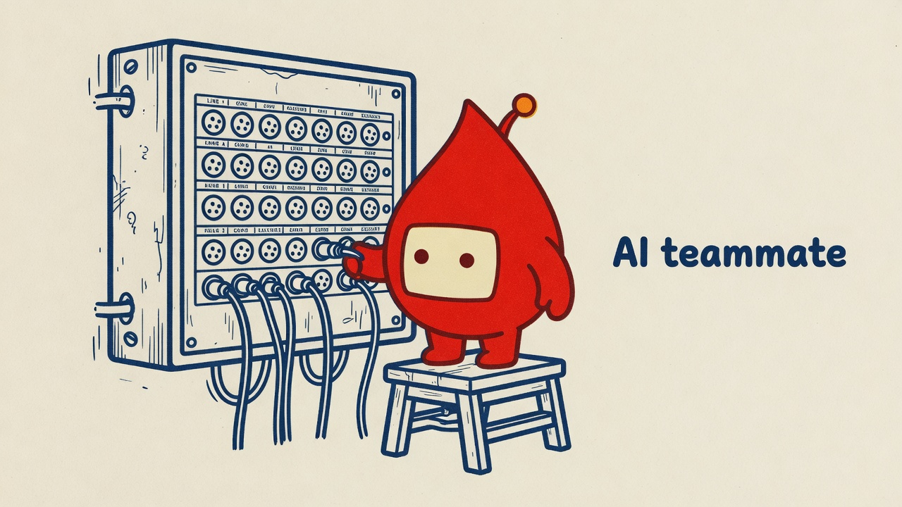
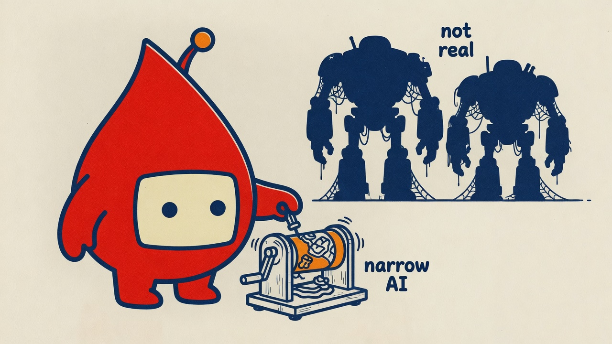
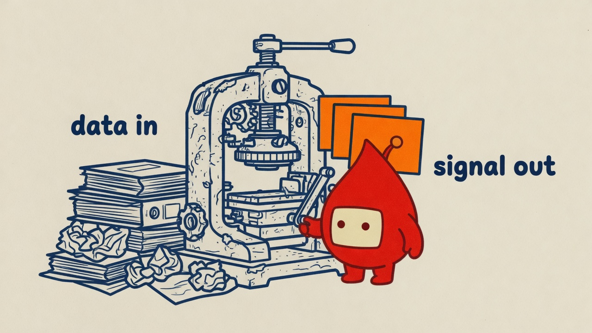
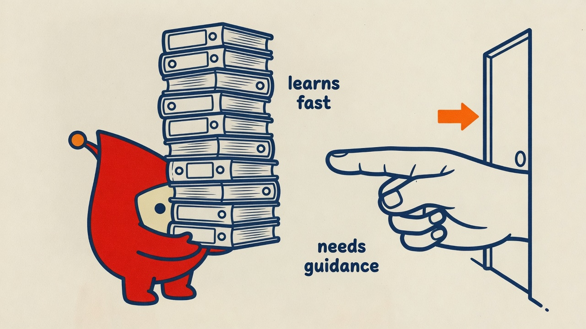

hero — AI teammate switchboard
x-ai/grok-imagine-image-quality
A 16:9 horizontal editorial illustration that explains ONE idea: "AI is already your quiet mission partner — practical, not science-fiction". Composition (a contraption): Pulse staffs a battered, wall-mounted manual telephone relay switchboard — a dense grid of labeled plug sockets and dangling cables. Pulse stands on a small step stool, studiously plugging a cable into a socket with one stubby arm while three cables already hang connected and orderly. The switchboard is old, worn, slightly absurd, clearly operating. Generous negative space (keep ~35%+ of the canvas empty); Pulse and switchboard are large and confident, ~55–65% of the frame. No ground line, table edge, or prop passes through Pulse's body — background lines stop at its silhouette. CHARACTER (locked, keep exactly on the reference model): the recurring mascot — a plump teardrop/blood-drop body (fat and rounded at the bottom, narrowing to a gentle pointed tip at the top) filled solid blood red (#c0392b), one rounded-rectangle screen face centered on the wide lower portion with a cream-white fill and two small dot eyes, blank deadpan (no eyebrows, no mouth), one short antenna with an accent-colored ball tip (orange), small stubby arms and legs in the same blood-red fill. It MUST perform the move — plugging in the switchboard cable — not decorate. The body is blood red; the screen window is cream/paper-colored; the dot eyes are dark red or navy; the antenna ball uses THIS palette's accent (orange #ff6a1a), even if the reference sheet shows a different hue. LINE LANGUAGE: draw EVERYTHING — mascot, objects, arrows — in ONE bold, even-weight, softly-rounded outline (clean vinyl-sticker line), not thin scratchy sketch lines. STYLE: risograph print — grainy halftone texture, slight ink-layer offset, faint paper grain, flat fills, no gradients, no soft shadows. PALETTE: paper #fbf7ee. Structure ink #1b2a6b (navy) for all linework, forms, and label text. Accent #ff6a1a (orange) used sparingly — the antenna ball + 1–2 elements only. LABELS: exactly 1 short hand-lettered English label — "AI teammate" — in the structure-ink color (#1b2a6b) placed directly on the bare paper. Never put label text on a colored fill. No title bar, no type label, no logo. Aspect ratio: 16:9.

types of AI — narrow is real
x-ai/grok-imagine-image-quality
A 16:9 horizontal editorial illustration that explains ONE idea: "Only narrow AI is real and useful — the science-fiction versions are unplugged and irrelevant". Composition (a snag/change): Pulse confidently operates a single compact, focused gadget — a small hand-cranked sorting drum, lit and actively spinning — in the foreground. Behind it, two enormous dormant robot silhouettes stand unplugged, covered in dust, cobwebs across their joints, clearly inert. The contrast is the point: the small practical tool is alive; the giants are dead weight in the corner. Pulse is leaning into the small active gadget, fully engaged. Generous negative space (keep ~35%+ of the canvas empty); Pulse and the foreground tool are large and confident, ~55% of the frame, the dusty giants are smaller and receding. No prop passes through Pulse's body. CHARACTER (locked, keep exactly on the reference model): the recurring mascot — a plump teardrop/blood-drop body (fat and rounded at the bottom, narrowing to a gentle pointed tip at the top) filled solid blood red (#c0392b), one rounded-rectangle screen face centered on the wide lower portion with a cream-white fill and two small dot eyes, blank deadpan (no eyebrows, no mouth), one short antenna with an accent-colored ball tip (orange), small stubby arms and legs in the same blood-red fill. It MUST perform the move — cranking or operating the small active gadget — not decorate. The body is blood red; the screen window is cream/paper-colored; the dot eyes are dark red or navy; the antenna ball uses THIS palette's accent (orange #ff6a1a), even if the reference sheet shows a different hue. LINE LANGUAGE: draw EVERYTHING — mascot, objects — in ONE bold, even-weight, softly-rounded outline (clean vinyl-sticker line), not thin scratchy sketch lines. STYLE: risograph print — grainy halftone texture, slight ink-layer offset, faint paper grain, flat fills, no gradients, no soft shadows. PALETTE: paper #fbf7ee. Structure ink #1b2a6b (navy) for all linework, forms, and label text. Accent #ff6a1a (orange) used sparingly — the antenna ball + the active gadget's lit element only. LABELS: exactly 2 short hand-lettered English labels — "narrow AI" near the active foreground gadget, "not real" near the dusty dormant robots — in the structure-ink color (#1b2a6b) placed directly on the bare paper. Never put label text on a colored fill. No title bar, no type label, no logo. Aspect ratio: 16:9.

how AI works — data in, signal out
x-ai/grok-imagine-image-quality
A 16:9 horizontal editorial illustration that explains ONE idea: "AI learns from mission data and transforms it into clear signals that reduce repetitive work". Composition (a throughput): Pulse stands at a worn, hand-cranked press, cranking its handle with one stubby arm. On the left: a messy, jumbled stack of case files and forms (input). On the right coming out of the press: three neat, orderly flag cards — clear and organized (output). The press is slightly absurd — old mechanical, faintly battered — but clearly working. Pulse is mid-crank, engaged, deadpan. The flow reads left to right. Generous negative space (keep ~35%+ of the canvas empty); Pulse and press are large and confident, ~55–65% of the frame. No prop passes through Pulse's body; the crank handle is held in Pulse's hand with visible separation from the body. CHARACTER (locked, keep exactly on the reference model): the recurring mascot — a plump teardrop/blood-drop body (fat and rounded at the bottom, narrowing to a gentle pointed tip at the top) filled solid blood red (#c0392b), one rounded-rectangle screen face centered on the wide lower portion with a cream-white fill and two small dot eyes, blank deadpan (no eyebrows, no mouth), one short antenna with an accent-colored ball tip (orange), small stubby arms and legs in the same blood-red fill. It MUST perform the move — cranking the press — not decorate. The body is blood red; the screen window is cream/paper-colored; the dot eyes are dark red or navy; the antenna ball uses THIS palette's accent (orange #ff6a1a), even if the reference sheet shows a different hue. LINE LANGUAGE: draw EVERYTHING — mascot, objects — in ONE bold, even-weight, softly-rounded outline (clean vinyl-sticker line), not thin scratchy sketch lines. STYLE: risograph print — grainy halftone texture, slight ink-layer offset, faint paper grain, flat fills, no gradients, no soft shadows. PALETTE: paper #fbf7ee. Structure ink #1b2a6b (navy) for all linework, forms, and label text. Accent #ff6a1a (orange) used sparingly — the antenna ball + the neat output flag cards only. LABELS: exactly 2 short hand-lettered English labels — "data in" near the messy left stack, "signal out" near the neat right output — in the structure-ink color (#1b2a6b) placed directly on the bare paper. Never put label text on a colored fill. No title bar, no type label, no logo. Aspect ratio: 16:9.

volunteer analogy — learns fast, needs guidance
x-ai/grok-imagine-image-quality
A 16:9 horizontal editorial illustration that explains ONE idea: "AI is a fast-learning volunteer — it has absorbed a lot, but always needs a human hand to stay on mission". Composition (a crossing): Pulse stands carrying a comically tall, precarious stack of reference binders — so many binders the stack towers above its head and wobbles slightly — representing all the experience and patterns it has absorbed. A large, calm human hand enters from the right side of the frame, palm open, pointing clearly ahead toward a simple mission marker (a plain door or an arrow-marked destination on the wall). Pulse's screen face is blank and earnest, looking forward. The scene reads: learned a lot, pointed in the right direction. Generous negative space (keep ~35%+ of the canvas empty); Pulse and binder stack are large and confident, ~55–65% of the frame. The binder stack is held by both of Pulse's stubby arms — clearly gripped, not fused to the body. CHARACTER (locked, keep exactly on the reference model): the recurring mascot — a plump teardrop/blood-drop body (fat and rounded at the bottom, narrowing to a gentle pointed tip at the top) filled solid blood red (#c0392b), one rounded-rectangle screen face centered on the wide lower portion with a cream-white fill and two small dot eyes, blank deadpan (no eyebrows, no mouth), one short antenna with an accent-colored ball tip (orange), small stubby arms and legs in the same blood-red fill. It MUST perform the move — carrying the towering binder stack while facing the direction the hand points — not decorate. The body is blood red; the screen window is cream/paper-colored; the dot eyes are dark red or navy; the antenna ball uses THIS palette's accent (orange #ff6a1a), even if the reference sheet shows a different hue. LINE LANGUAGE: draw EVERYTHING — mascot, objects, human hand — in ONE bold, even-weight, softly-rounded outline (clean vinyl-sticker line), not thin scratchy sketch lines. STYLE: risograph print — grainy halftone texture, slight ink-layer offset, faint paper grain, flat fills, no gradients, no soft shadows. PALETTE: paper #fbf7ee. Structure ink #1b2a6b (navy) for all linework, forms, and label text. Accent #ff6a1a (orange) used sparingly — the antenna ball + the mission destination marker only. LABELS: exactly 2 short hand-lettered English labels — "learns fast" near the binder stack, "needs guidance" near the pointing human hand — in the structure-ink color (#1b2a6b) placed directly on the bare paper. Never put label text on a colored fill. No title bar, no type label, no logo. Aspect ratio: 16:9.